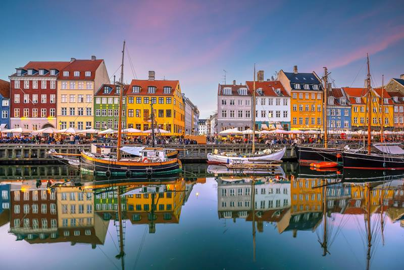
REGIONES
Dinamarca esta conformado por 5 regiones
Región Capital (Hovedstaden)
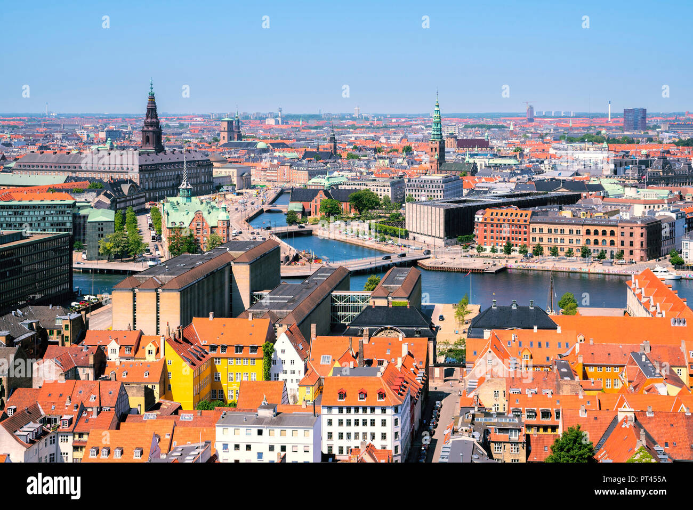
La Región Capital es el centro político, económico y cultural de Dinamarca. Su ciudad más importante es Copenhague, la capital del país, conocida por su diseño moderno, la estatua de La Sirenita y la calle peatonal más larga de Europa, Strøget. También alberga el famoso parque de atracciones Tivoli Gardens y el barrio alternativo de Christiania. La región incluye varias islas y el puente de Øresund, que la conecta con Suecia.
Región de Selandia (Sjælland)
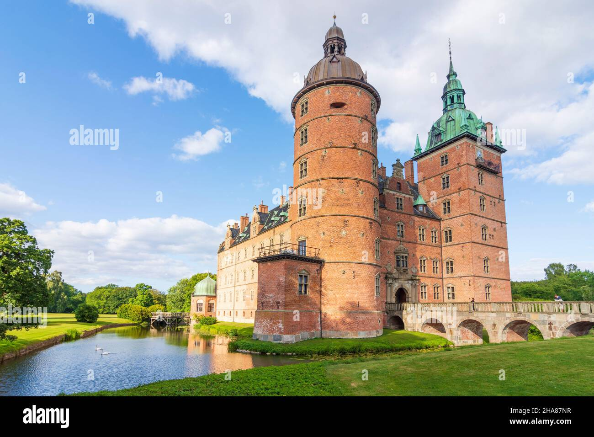
Ubicada en la isla más grande de Dinamarca, esta región es conocida por sus castillos históricos, como el Castillo de Kronborg en Helsingør, famoso por ser el escenario de Hamlet de Shakespeare. También es hogar de Roskilde, una ciudad con una impresionante catedral donde descansan muchos reyes daneses y un museo vikingo con barcos originales. Selandia es una región con una fuerte tradición musical y alberga el famoso festival de rock Roskilde Festival.
Región de Dinamarca Meridional (Syddanmark)
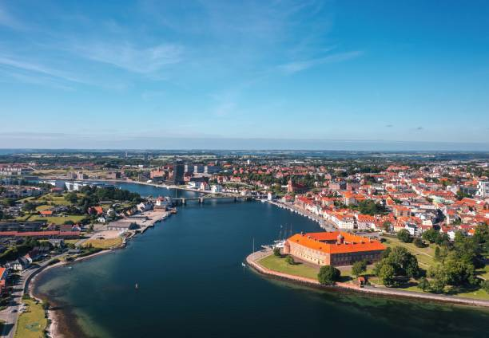
Situada en la parte sur del país, esta región se destaca por su conexión con Alemania y su fuerte influencia histórica. Su ciudad más grande, Odense, es la cuna del escritor de cuentos de hadas Hans Christian Andersen. La región cuenta con paisajes naturales impresionantes, islas pintorescas y el Parque de los Pantanos de Wadden, un sitio declarado Patrimonio de la Humanidad por la UNESCO. También es hogar de Legoland Billund, un parque temático dedicado a los famosos bloques de LEGO, que fueron inventados en Dinamarca.
Región de Jutlandia Central (Midtjylland)
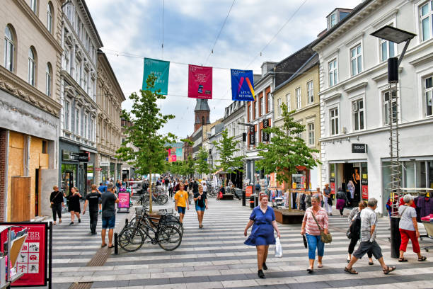
Esta región combina ciudades vibrantes con paisajes naturales. Aarhus, la segunda ciudad más grande de Dinamarca, es conocida por su vida universitaria y su escena cultural, con museos como el ARoS Aarhus Kunstmuseum y el barrio latino. También se encuentra el Parque Nacional Mols Bjerge, ideal para senderismo y ciclismo. Jutlandia Central es una región con una fuerte industria y es clave en la producción agrícola del país.
Región de Jutlandia Septentrional (Nordjylland)
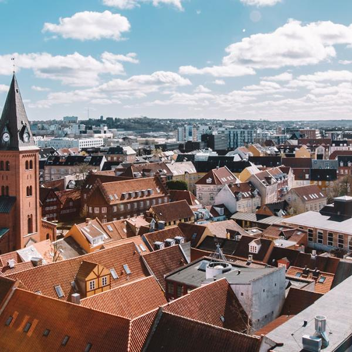
La región más septentrional de Dinamarca es famosa por sus impresionantes paisajes costeros y su estilo de vida relajado. La ciudad principal, Aalborg, es un centro cultural con una gran vida nocturna y una arquitectura fascinante, incluyendo el centro cultural Utzon Center, diseñado por el arquitecto de la Ópera de Sídney, Jørn Utzon. En esta región se encuentra Skagen, el punto más al norte del país, donde los mares del Báltico y del Norte se encuentran en un espectáculo natural impresionante. También es una región con una rica herencia vikinga, con varios sitios arqueológicos importantes.
Cultura más famosa de Dinamarca: "Hygge"
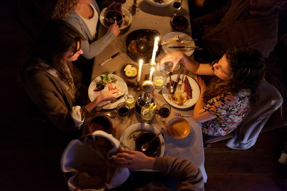
Uno de los conceptos más representativos de la cultura danesa es "hygge" (se pronuncia juga). No tiene una traducción exacta, pero describe una sensación de bienestar, comodidad y disfrute de los pequeños placeres de la vida. Hygge se asocia con encender velas en invierno, compartir una cena con amigos, leer un libro bajo una manta o simplemente disfrutar de un ambiente acogedor. Es una de las razones por las que Dinamarca es considerado uno de los países más felices del mundo.
Cosas que caracterizan a dinamarca
1-Diseño y arquitectura escandinava
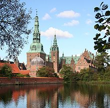
Dinamarca es famosa por su diseño minimalista y funcional. Diseñadores como Arne Jacobsen y Hans Wegner han creado muebles icónicos como la Silla Huevo o la Silla Wishbone. También destacan edificios como la Ópera de Copenhague y el Museo de Arte Moderno Louisiana.
2-Música y festivales
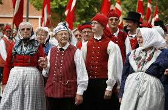
Dinamarca tiene una gran tradición musical. El Festival de Roskilde es uno de los eventos de música más grandes de Europa. También hay una fuerte escena de música electrónica y jazz. Además, Dinamarca ha ganado varias veces el Festival de Eurovisión.
3-Literatura y cuentos de hadas
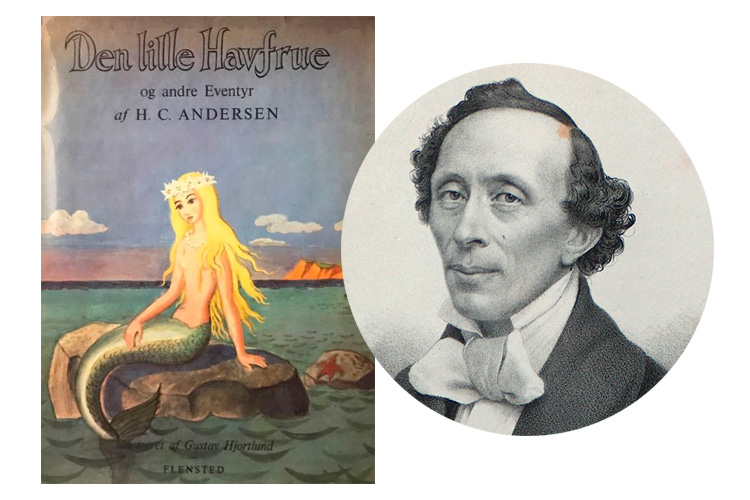
El escritor más famoso de Dinamarca es Hans Christian Andersen, autor de cuentos clásicos como La Sirenita, El Patito Feo y El Soldadito de Plomo. Su legado es tan importante que en Copenhague hay una estatua de la Sirenita en su honor
4-Gastronomía nórdica
La comida danesa tiene platos únicos como:
Smørrebrød: Sándwich abierto con pan de centeno y diversos ingredientes.
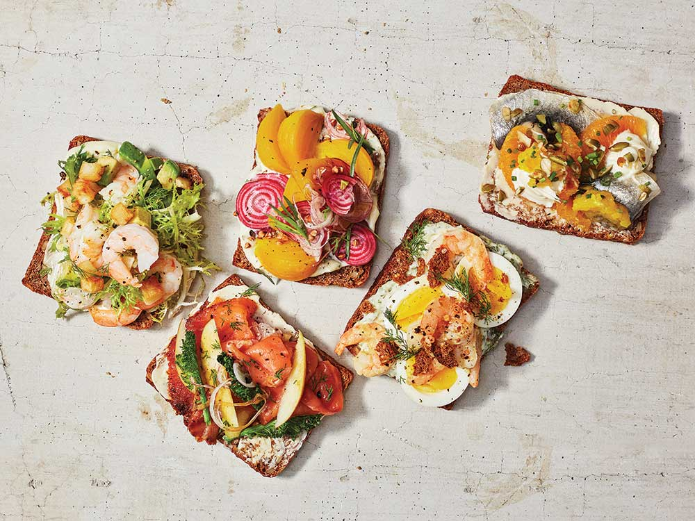
Frikadeller: Albóndigas de carne fritas.
Æbleskiver: Bolas de masa dulce, parecidas a los buñuelos.
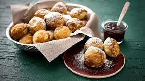
Además, Dinamarca alberga el restaurante Noma, considerado varias veces el mejor del mundo.